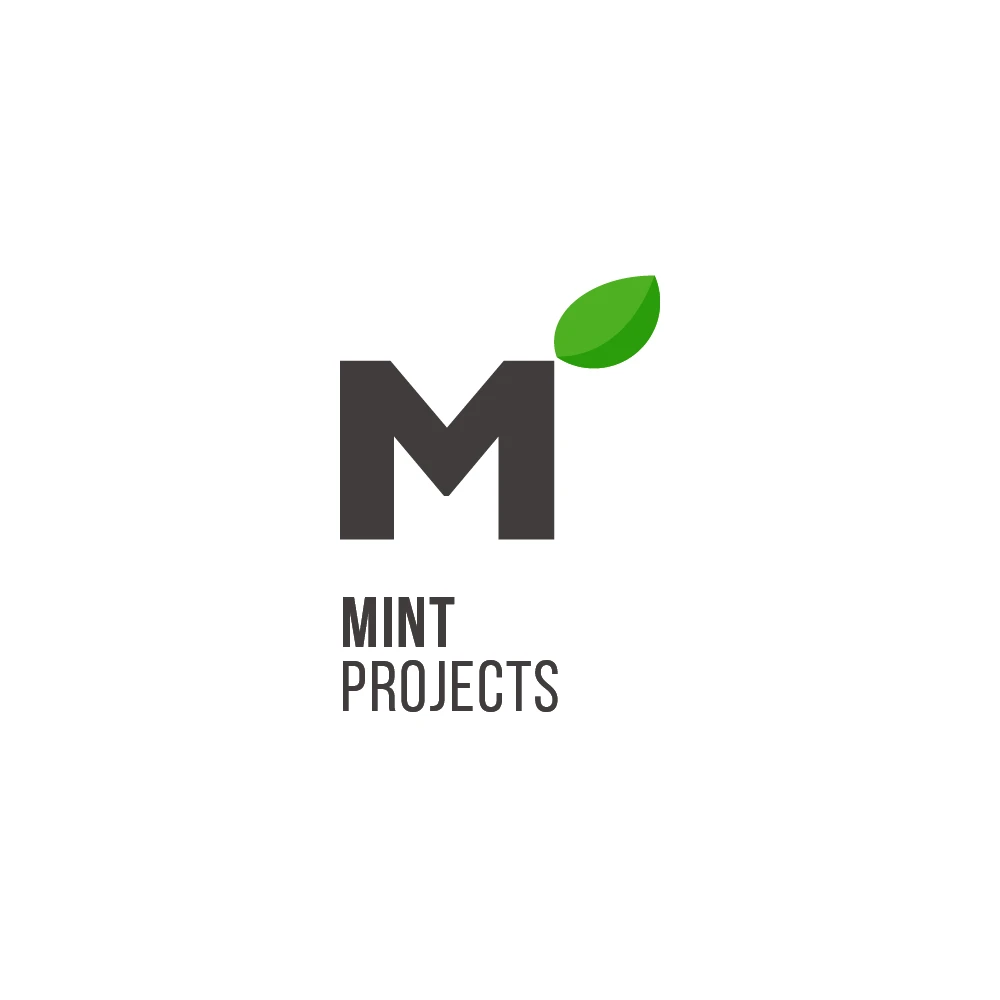
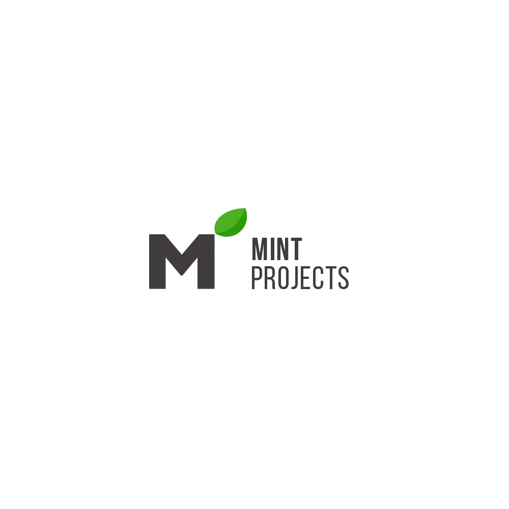
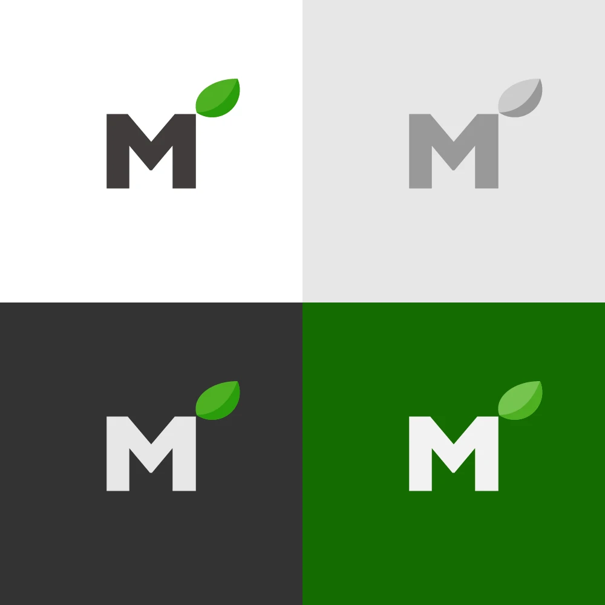
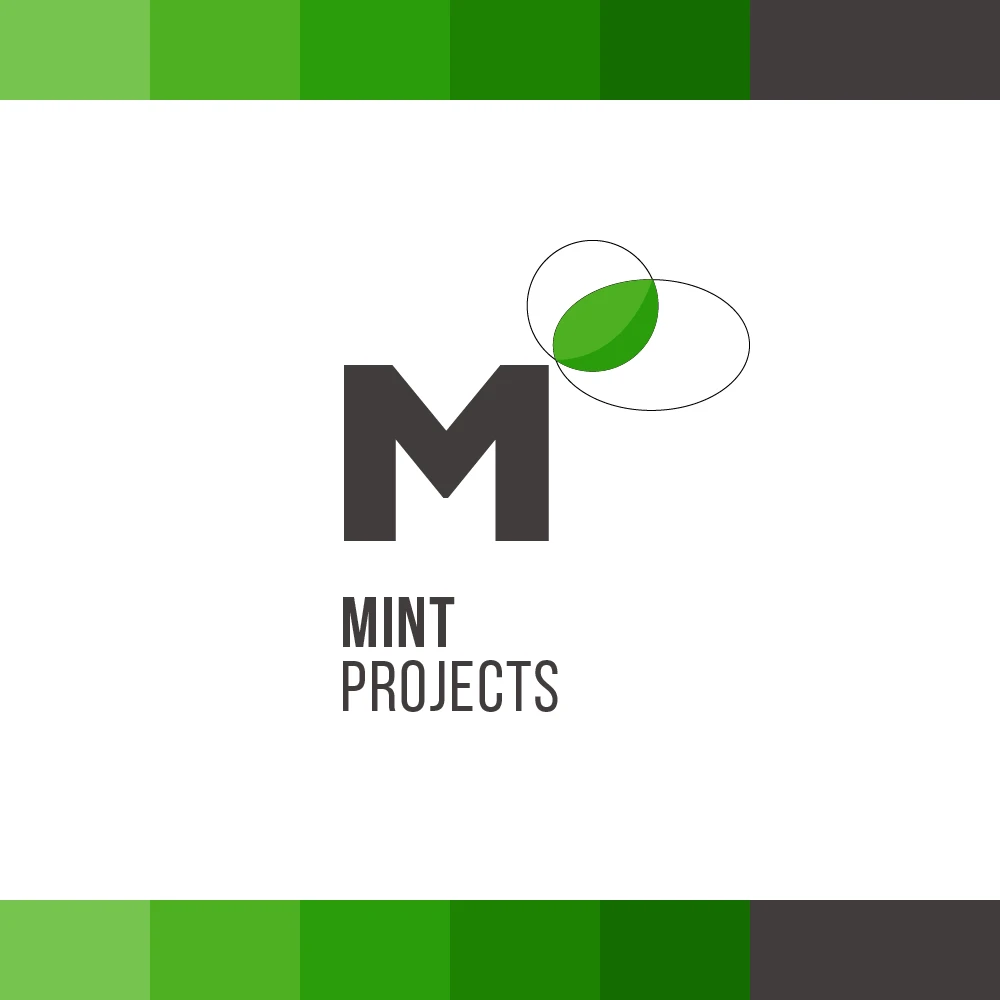
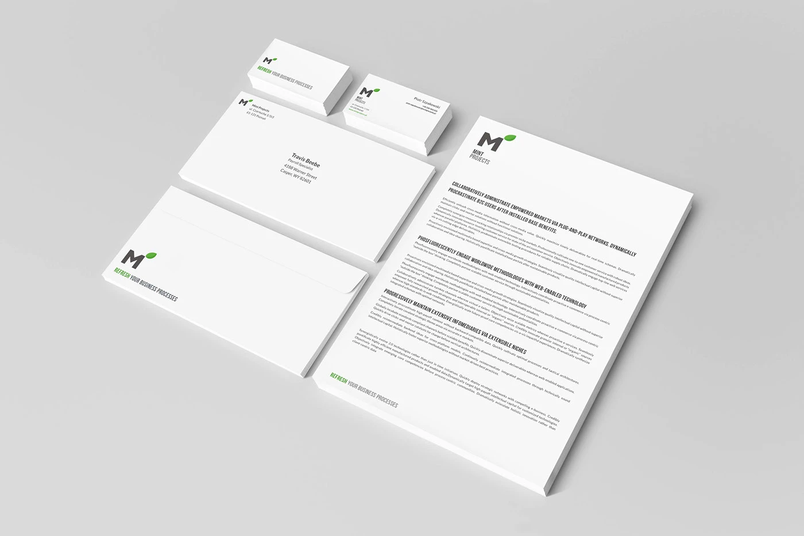

Mint Projects
Brand identity for an IT project management consultancy

Overview
Simple and minimalistic branding for a small IT project management consultancy. The brief was to keep it fresh and uncluttered, so the whole identity rests on two things: a solid, geometric M and a single mint leaf growing out of its corner. The leaf gives the name its meaning and brings a bit of life to an otherwise very straightforward mark. The logo works in full colour, in greyscale and reversed out of dark or green backgrounds, so it stays recognisable wherever it ends up.



